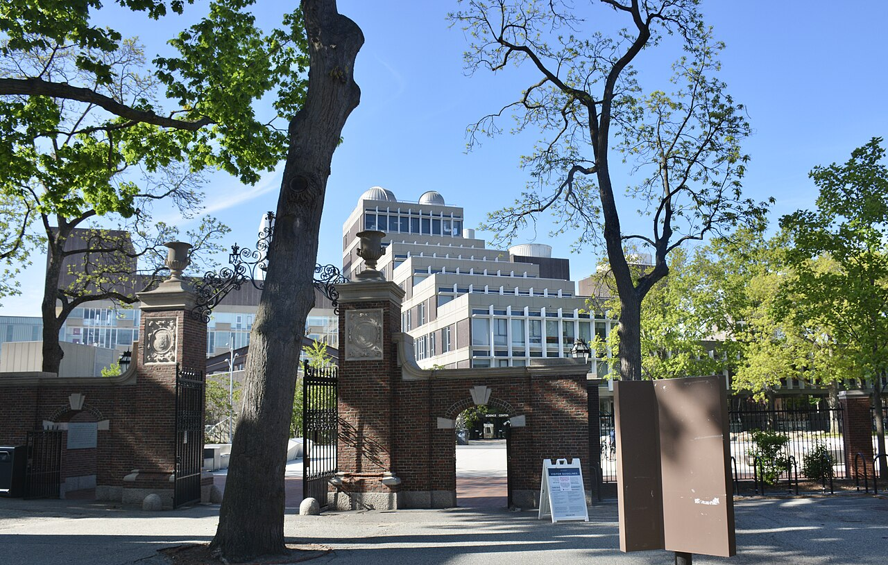

GRIEVANCE VIII ◆ INSTITUTIONAL INDEPENDENCE
He has made public research funding a lever for demanding obedience from independent universities.
THE RECORD SHOWS
A federal judge ruled that the administration unlawfully canceled billions in Harvard research grants amid demands affecting university governance and speech.

The administration said funding conditions responded to antisemitism and civil-rights concerns on campus—serious matters requiring enforcement under law. Harvard argued the government instead used grants to coerce changes to its hiring, teaching, and governance. A federal judge ruled against roughly $2.2 billion in cancellations in September 2025; the administration pursued an appeal in October 2026. The case is distinct from whether individual universities adequately addressed discrimination.
A DOCUMENTED SEQUENCE
3 MILESTONES- April 2025Harvard sued after the government froze billions in research awards.
- September 2025A federal judge held that the mass grant cancellations were unlawful.
- October 5, 2026An appellate court heard the administration’s attempt to restore its authority to cancel the awards.